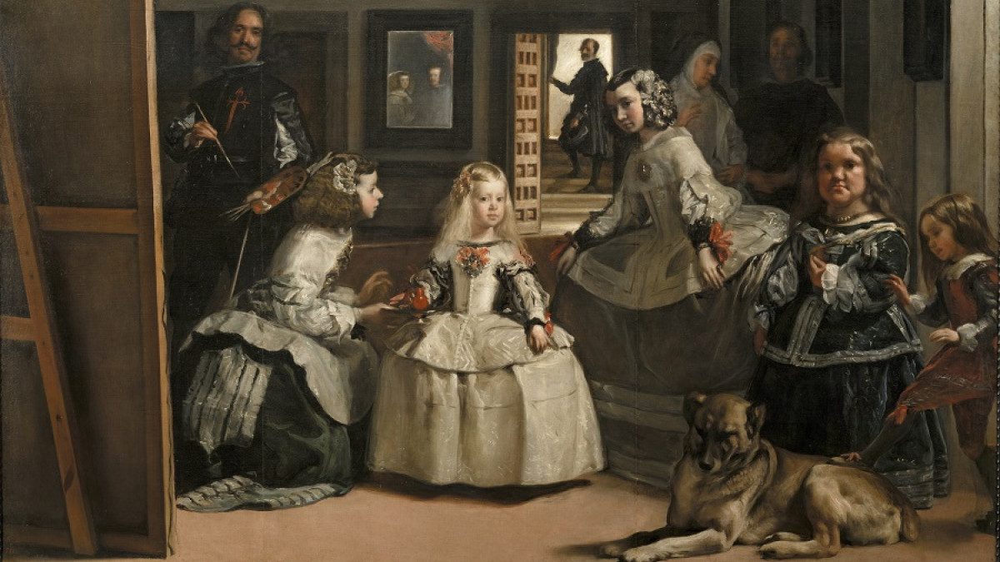
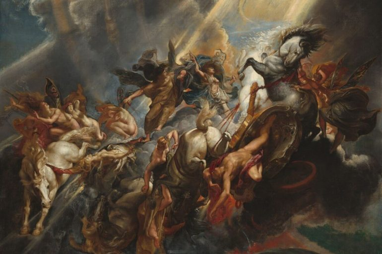

¿Qué es?
El Barroco fue un período cultural de la Edad Moderna que se desarrolló entre el Renacimiento y la Ilustración en Europa occidental y en las colonias latinoamericanas. La cuna del Barroco fue Italia con figuras sobresalientes como los arquitectos Bernini y Borromini o el pintor Caravaggio. En España coincidió con el Siglo de Oro, momento de esplendor del arte y la literatura. En esta etapa destacan pintores como Velázquez, Murillo y Zurbarán, escultores como Martínez Montañés y escritores de la talla de Cervantes, Quevedo y Lope de Vega. En los países católicos se vinculó a la Contrarreforma y se caracterizó por la temática religiosa. En el norte de Europa, países de la reforma protestante, el arte trató temas vinculados a la vida cotidiana, la naturaleza o la mitología y destacaron maestros de la pintura como Rubens o Rembrandt.
Características del estilo barroco
El arte barroco se caracteriza por su uso expresivo de luz y sombra, una técnica conocida como claroscuro. Esta técnica crea contrastes dramáticos que enfatizan el volumen y la profundidad de las figuras, además de generar una atmósfera de intensidad emocional. El claroscuro se utiliza frecuentemente para destacar ciertos elementos de la composición y guiar la mirada del espectador a través de la escena.
Otra característica distintiva del arte barroco es la composición dinámica. A diferencia de las composiciones estáticas del Renacimiento, las obras barrocas presentan un sentido de movimiento y energía. Las figuras son frecuentemente colocadas en poses dramáticas y gestos exagerados, lo que añade una sensación de acción e inmediatez a la obra. Este enfoque ayuda a involucrar emocionalmente al espectador, creando una experiencia visual más intensa y envolvente.
Elrealismo dramático también es una marca registrada del barroco. Las obras presentan una representación fiel y detallada de la realidad, pero con un toque de dramatización que intensifica la expresión y el impacto emocional. Este realismo es frecuentemente utilizado para narrar historias religiosas y mitológicas de forma vívida y convincente, incentivando la devoción y la contemplación espiritual.
- Uso expresivo de luz y sombra (claroscuro).
- Composiciones dinámicas y enérgicas.
- Realismo dramático y envolvente.
Contexto histórico, social y cultural
El arte barroco floreció entre finales del siglo XVI y principios del siglo XVIII, un período marcado por grandes transformaciones políticas, religiosas y culturales en Europa. Este movimiento artístico surgió en medio de la Contrarreforma, una respuesta de la Iglesia Católica a la Reforma Protestante, y buscaba reavivar la fe y la devoción religiosa a través de un arte exuberante, emocional y dramáticamente intenso. El arte barroco es conocido por sus composiciones dinámicas, uso expresivo de la luz y sombra (claroscuro) y una rica ornamentación. Además de su fuerte presencia en Europa, el barroco también se difundió a las colonias europeas en América, influyendo profundamente en el arte y la arquitectura de estas regiones.
Una curiosidad interesante es que la Basílica de San Pedro, en el Vaticano, una de las mayores iglesias del mundo, es un excelente ejemplo de arquitectura barroca. Otro hecho curioso es que el movimiento barroco influyó no solo en las artes visuales y la arquitectura, sino también en la música, con compositores como Johann Sebastian Bach y Georg Friedrich Händel creando obras icónicas que aún son celebradas hoy.
Origen del Arte Barroco
El movimiento barroco tuvo origen a finales del siglo XVI y principios del siglo XVII, en un contexto de intensas transformaciones políticas y religiosas en Europa. Surgió como una respuesta directa de la Iglesia Católica a la Reforma Protestante, que había desafiado la autoridad y las prácticas de la iglesia. La Contrarreforma, movimiento de renovación interna de la Iglesia Católica, adoptó el arte barroco como una herramienta para reavivar la fe y atraer a los fieles a través de una estética poderosa y emocionalmente envolvente.
El arte barroco fue utilizado para comunicar mensajes religiosos de forma más directa e impactante. La Iglesia Católica buscaba, a través de la grandiosidad y el drama característicos del barroco, crear una experiencia espiritual intensa que reafirmara su doctrina y valores. De esta forma, el barroco se convirtió en un estilo visual asociado a la revalorización del poder y la presencia de la Iglesia en la vida cotidiana de las personas.
Además de su papel religioso, el barroco también reflejó los cambios culturales y sociales de la época. El crecimiento de las monarquías absolutistas y la centralización del poder político en la figura del rey fueron temas recurrentes en las obras barrocas, que frecuentemente glorificaban la realeza y la nobleza a través de retratos majestuosos y ceremonias grandiosas.
- El barroco surgió como respuesta a la Reforma Protestante.
- El arte barroco fue adoptado por la Iglesia Católica durante la Contrarreforma.
- El barroco refleja las transformaciones políticas y sociales de la Edad Moderna.
Principales artistsas y obras
Entre los principales artistas barrocos, destaca Caravaggio, cuyo trabajo es fundamental para la comprensión del barroco. Caravaggio es conocido por su uso revolucionario del claroscuro y por sus composiciones dramáticas que capturan momentos de intensa emoción y espiritualidad. Una de sus obras más famosas, 'La Llamada de San Mateo', ejemplifica estas características con su uso magistral de la luz para enfatizar la figura de San Mateo y narrar la historia de su conversión.
Otro artista seminal del período barroco es Gian Lorenzo Bernini, un escultor y arquitecto cuyas obras son sinónimos del esplendor y la grandiosidad del barroco. Bernini es conocido por sus esculturas que parecen capturar el movimiento y la emoción en piedra. Su obra 'Éxtasis de Santa Teresa' es un ejemplo icónico, exhibiendo una representación dramática de la santa en un momento de visión espiritual, con una expresión de éxtasis que trasciende la mera representación física.
Rembrandt, un maestro del barroco holandés, también dejó un legado duradero con sus pinturas que exploran la condición humana y la complejidad emocional. Sus obras son conocidas por su profundidad psicológica y por el uso hábil de la luz y sombra para crear composiciones ricas y evocadoras. 'La Ronda de Noche' es una de sus obras más célebres, destacándose por su composición dinámica y por el retrato realista y detallado de los personajes.
- Caravaggio: 'La Llamada de San Mateo' y uso del claroscuro.
- Bernini: 'Éxtasis de Santa Teresa' y la escultura barroca.
- Rembrandt: 'La Ronda de Noche' y profundidad psicológica.

